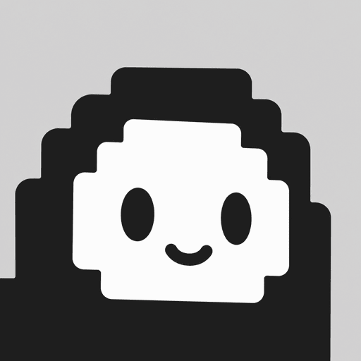

Review Previews · 2026-08
Pixoma 设计系统 · 审查预览
七个聚焦卡片，逐项审查颜色、排版、间距、圆角与阴影、组件、品牌资产与应用界面。卡片引用 colors_and_type.css 与 assets/ 的真实文件。
颜色
语义令牌亮暗对照、accent 使用预算与图表色。只取 theme.css 语义色，禁止裸 hex。
打开卡片 →
后台 123 Abc
排版
Inter 同族分层、等宽数字与 Mono 栈；字号阶梯 H1 → Meta。
打开卡片 →间距
4px 基准刻度 4→64、区块节奏、侧栏与控件尺寸、44px 命中区。
打开卡片 →圆角与阴影
圆角刻度 sm→xl；表面无投影 vs 浮层保留 shadow 的对照。
打开卡片 →组件
按钮、徽章、表单、FilterSegment、数据表与空态 / 错误态 / 骨架。
打开卡片 →

品牌资产
真实源文件：logo、后台 logo、favicon 与运行时图标清单。
打开卡片 →应用界面
应用壳、Master–Detail 列表 + 紧凑筛选、Dashboard 分区与向导实样。
打开卡片 →